Da igreja ao galpão
Três trechos de 512×320: início, rua repetida três vezes e chegada. A igreja conserva seus pixels originais; os objetos mudam de posição ao longo da rua.
O cenário inteiro
A versão padrão usa as 16 cores do cenário da primeira fase. Clique no panorama para levar a janela de enquadramento àquela posição.
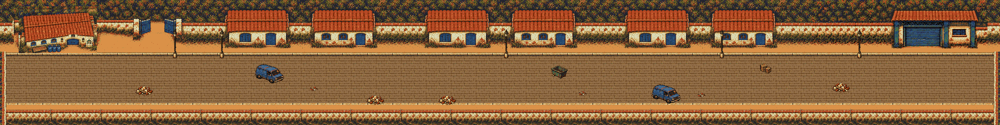
Abrir PNG completo · PNG com igreja destruída · Arquivos e verificações


Enquadramento em tamanho de jogo
Simulação visual de 320×224 com reserva de 24 px para o HUD. Não é captura da ROM nem um playtest.
As quatro imagens de base
O início tem duas condições narrativas. As duas usam a mesma rua e o mesmo encaixe.
A · Igreja intacta
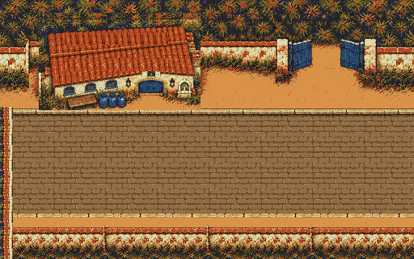
A · Igreja destruída
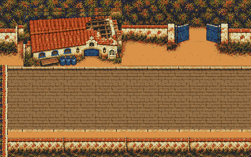
B · Rua repetível
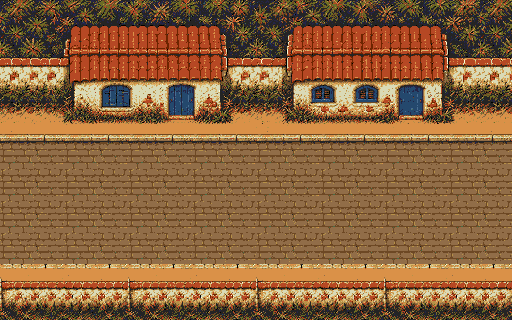
C · Chegada ao galpão
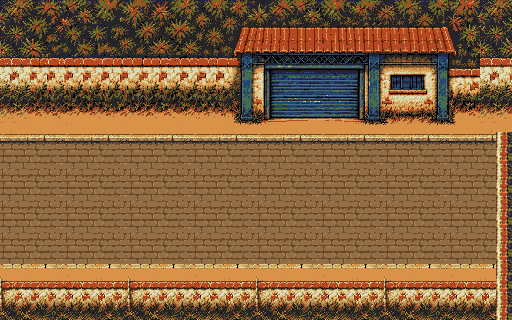
Ver a rua B repetida três vezes sem objetos
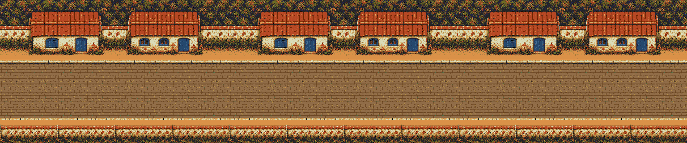
Os quatro encontros entre trechos
Pavimento, meio-fio e limite inferior compartilham a mesma montagem. Cada recorte mostra 160 px antes e depois da emenda.
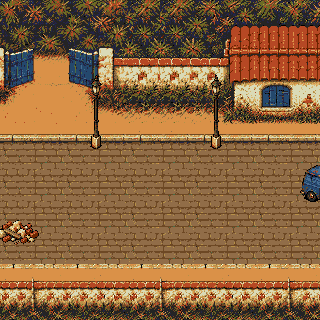
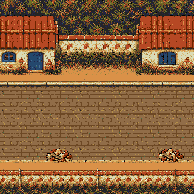
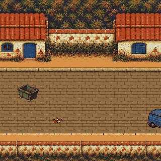
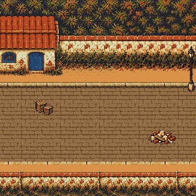
Objetos e proposta de circulação
Veículos e posições diferentes de postes, entulho, caçamba e caixas mudam os desvios sem redesenhar a arquitetura.
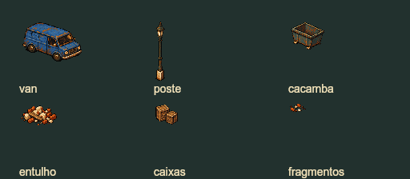
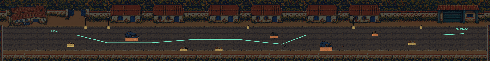
Revisão antes da implementação
Igreja intacta e destruída preservadas pixel a pixel. Arquitetura sem peças recortadas na origem; rua central repetida de fato, com composição independente de objetos. O galpão foi estreitado e seu teto foi afastado da área do HUD.
Esta é uma proposta para avaliar a composição. A versão com 16 cores ainda excede a reserva de tiles da fase e precisa de uma etapa de otimização de materiais e atlas antes de poder entrar no jogo. Nenhuma aprovação visual, de memória ou de desempenho foi presumida.
Verificar origem e limites técnicos
Arte complementar criada com a ferramenta integrada imagegen. Montagem com cópia da igreja original, sem redimensionamento. A paleta de comparação conserva os pixels da igreja e converte as demais cores para as entradas já existentes.
| Verificação | Resultado |
|---|---|
| Sequência | A + B + B + B + C = 2560×320 |
| Sprite da igreja | 200×112, cópia exata nas duas condições |
| Arte na ROM | Não alterada |
| Paleta da prévia | 16 cores do cenário original |
| Atlas de até 640 tiles | Pendente; a proposta visual atual não cabe na reserva |
| Colisão e enquadramento | Proposta e simulação, sem validação no motor |
Manifesto com contagens e fontes · Prompt da rua · Montagem reproduzível